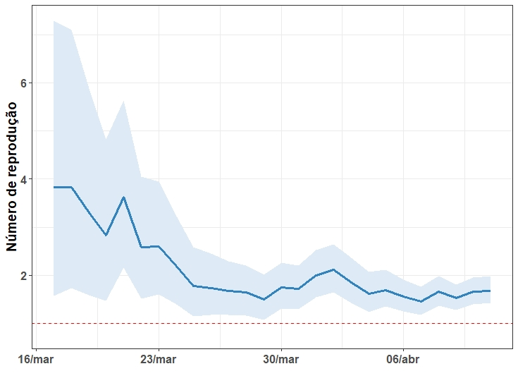

Bem-vindos ao #COVID-19noES, um repositório dos casos da COVID-19 no Espírito Santo
O #COVID-19noES surgiu como uma iniciativa independente com o objetivo de disponibilizar graficamente os dados atualizados sobre a epidemia da Covid-19 no estado do Espírito Santo. A ideia é trazer informações confiáveis sobre essa pandemia em nosso estado.
Atualizado em 04 de abril de 2020, 22:20
Análises
Abaixo você pode encontrar os resultados de algumas das análises que realizamos com relação aos casos presentes em nosso estado. Cada uma das análises visa responder uma pergunta simples, como vocês podem ver abaixo:
Quantos casos já temos no Espírito Santo? Quantos poderemos ter nos próximos dias?
Pontos pretos no gráfico indicam o número de casos confirmados no Espírito Santo por dia. Pontos em azul são a previsão para os próximos 5 dias (entre 224 e 478 casos em 09/04/2020), se a taxa de crescimento continuar a mesma dos últimos 5 dias. Em azul claro é o intervalo de confiança dessa previsão.
O quão rápido o número de indivíuos infectados está aumentando?
O tempo de duplicação indica quanto tempo leva que o número de casos dobre. Dessa forma, quanto menor ele for, mais rápido a doença está se espalhando. Esse número depende muito das medidas de contenção da doença. A estimativa de hoje indica que a epidemia se duplica a cada ~5 dias.
Para quantas pessoas (em média) um indivíduo infectado transmite a doença?

O número reprodutivo efetivo (Re) corresponde à média de pessoas contaminadas por um infectado. Se ele é maior que um, significa que a doença está se espalhando. Este limite está marcado com uma linha vermelha. O Re estimado para a epidemia de COVID-19 no Espírito Santo no momento está entre 1,2 e 2,1, ou seja, se expandindo.
Como os casos suspeitos estão aumentando no estado?
Casos suspeitos são pacientes com sintomas que tiveram contato com casos confirmados ou suspeitos, ou com pessoas que chegaram de área afetada. Veja definição em detalhes no site do Ministério da Saúde. Os casos suspeitos são avaliados pela Secretaria de Estado da Saúde do Espírito Santo (SESA) seguindo a Portaria Nº454/2020 do MS, podendo ser reclassificados como casos confirmados ou descartados.
Como se distribuem os casos (suspeitos e confirmados) nas regiões consideradas pela SESA?
Estes gráficos de pizza representam a distribuição de casos suspeitos e confirmados pelas diferentes regionais da SESA acumulados até 04/04/2020. A maior parte dos casos se concentra na região metropolitana, que corresponde a 76% e 86% dos casos suspeitos e confirmados, respectivamente.
Como se distribuem os casos (suspeitos e confirmados) nos diferentes municípios?
A cor de cada município indica a quantidade de casos suspeitos acumulados até o dia 04/04/2020. A maior parte dos casos suspeitos se concentra até o momento na região metropolitana do ES. Ao passar o mouse (computador) ou tocar na tela (celular) sobre a área do município, as informações sobre os casos suspeitos e confirmados são mostrados. Os pontos vermelhos indicam os locais com casos confirmados. Podemos notar que os casos confirmados estão distribuídos em todas as regiões do estado. Hoje temos cinco óbitos cofirmados por COVID-19 no estado, nos municípios de São Mateus, Serra, Vila Velha e Vitória.
Fontes
Embora os números da epidemia do COVID-19 neste site sejam atualizados regularmente, as informações mais confiáveis sobre a epidemia podem (e devem!) ser obtidos diretamente no site da Secretaria Estadual de Saúde do Espírito Santo.
Os códigos e análises utilizados se baseiam grandemente nos realizados pela iniciativa Observatório COVID-19 BR que apresenta os dados para todo o Brasil.
Outra iniciativa interessante para acompanhar os casos de COVID-19 mundialmente pode ser encontrado no site Monitoramento de casos relatados da COVID-19, mantido pelo Prof. Dr. Clayton Vieira Fraga Filho da UFES - Alegre e nós.